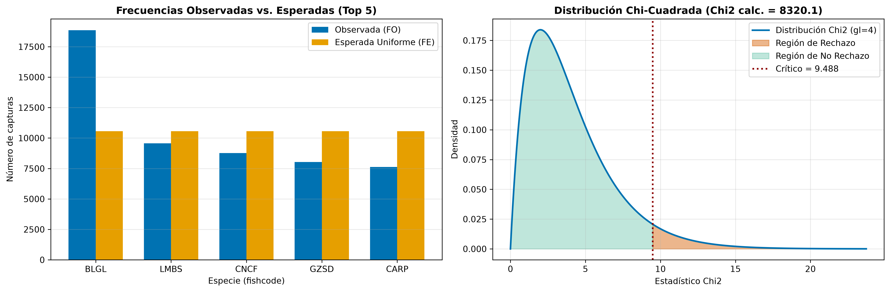
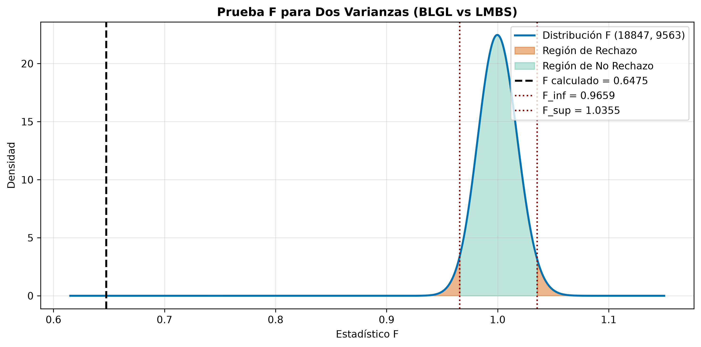
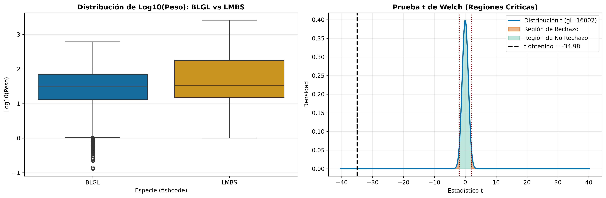
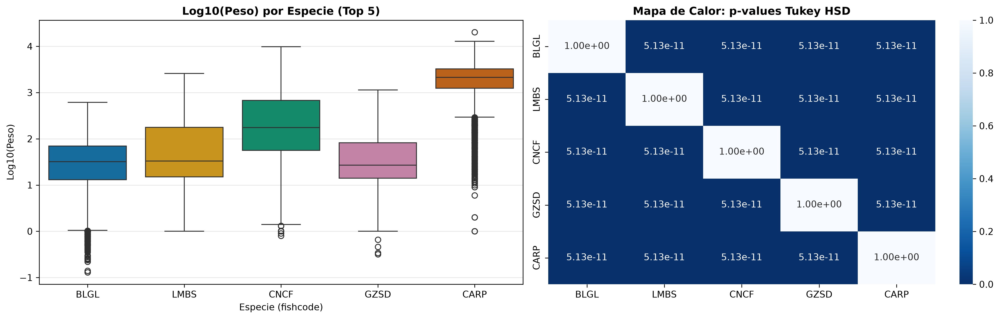

Página Web
Escanea para ver esta presentación
Pruebas Finales
Inferencia Paramétrica, Bondad de Ajuste (\(\chi^2\)), Prueba F, t de Welch, ANOVA y Modelos Predictivos Alométricos (LTRM)
Flujo de Análisis
El análisis trabaja sobre df_limpio.csv (conjunto de datos limpio, sin valores nulos ni inconsistencias de captura, proveniente del programa LTRM del UMESC), con 92,221 registros válidos y 100 especies distintas:
- Validación de tamaño de muestra y normalidad (escala original vs. transformación \(\log_{10}\)).
- Prueba de Bondad de Ajuste (\(\chi^2\)) sobre la distribución de frecuencias de las 5 especies principales (
fishcode). - Prueba F para dos varianzas entre las dos especies principales (BLGL vs. LMBS) para evaluar homocedasticidad.
- Prueba t de Welch para dos medias independientes con varianzas desiguales y tamaño del efecto (\(d\) de Cohen).
- ANOVA de un factor (con prueba de Levene, respaldo no paramétrico de Kruskal-Wallis, \(\eta^2\) y Tukey HSD) para las 5 especies principales.
- Modelos predictivos de peso y tamaño incorporando la especie y su relación alométrica (\(W = a \cdot L^b\)).
1 Verificación y Cálculo de Tamaño de Muestra
Fórmula de Suficiencia
Calculado con 95% de confianza (\(Z_{0.025} = 1.96\)) y un margen de error \(E = 0.05 \cdot s\) sobre \(\log_{10}(\text{weight})\), verificando además \(n_i \ge 30\) en cada categoría.
Resumen Descriptivo de las 5 Especies Principales
| Especie | n | Media Peso (g) | Std Peso (g) | Media Log10(Peso) | Var Log10(Peso) | Media Tamaño (mm) | \(n \ge 30\) |
|---|---|---|---|---|---|---|---|
| BLGL | 18,848 | 50.7856 | 54.1350 | 1.4304 | 0.3169 | 118.4810 | Cumple |
| LMBS | 9,564 | 195.2803 | 345.1919 | 1.7188 | 0.4894 | 178.7607 | Cumple |
| CNCF | 8,760 | 536.8682 | 800.8155 | 2.2850 | 0.4561 | 324.5365 | Cumple |
| GZSD | 8,036 | 75.5887 | 117.3229 | 1.5401 | 0.2793 | 169.4017 | Cumple |
| CARP | 7,624 | 2,369.2721 | 1,609.3979 | 3.2188 | 0.2229 | 522.3642 | Cumple |
2 Pruebas de Normalidad (Escala Original vs. Transformación \(\log_{10}\))
Prueba de Validación: Omnibus \(K^2\) de D'Agostino-Pearson
¿Por qué se usa? A diferencia de Shapiro-Wilk (que pierde estabilidad con \(n > 5,000\)), D'Agostino-Pearson está diseñada para muestras grandes como las de este dataset (\(n \approx 7,600 - 18,800\)).
¿Para qué sirve? Evalúa conjuntamente si la asimetría (\(g_1\)) y la curtosis (\(g_2\)) se desvían de una distribución normal. Permite cuantificar la mejora al transformar los datos con \(\log_{10}(\text{weight})\).
| Especie | n | Asimetría Orig. | \(K^2\) Orig. | Asimetría Log10 | Curtosis Log10 | \(K^2\) Log10 | \(p\)-value Log10 |
|---|---|---|---|---|---|---|---|
| BLGL | 18,848 | 1.926 | 7,352.15 | -0.677 | 0.127 | 1,206.12 | 1.2401e-262 |
| LMBS | 9,564 | 2.462 | 4,769.62 | 0.529 | -0.772 | 1,104.94 | 1.1639e-240 |
| CNCF | 8,760 | 2.716 | 5,122.33 | -0.128 | -0.456 | 154.08 | 3.4744e-34 |
| GZSD | 8,036 | 3.227 | 5,525.70 | 0.311 | -0.155 | 133.15 | 1.2216e-29 |
| CARP | 7,624 | 1.192 | 1,850.44 | -1.905 | 4.763 | 2,941.56 | 0.0000e+00 |
Comparativa Visual: Peso Original vs. Log10(Peso) y Gráfico Q-Q

3 Prueba de Bondad de Ajuste (\(\chi^2\)): Distribución Uniforme de Especies
Definición de Hipótesis
\[ \chi^2 = \sum_{i=1}^{k} \frac{(FO_i - FE_i)^2}{FE_i} \] Validación de supuesto: todas las \(FE_i = 10,566.4 \ge 5\).
Tabla de Frecuencias Observadas vs. Esperadas (\(n = 52,832\))
| Especie | FO (Observada) | \(p_i\) | FE (Esperada) | \((FO - FE)^2 / FE\) |
|---|---|---|---|---|
| BLGL | 18,848 | 0.20 | 10,566.4 | 6,490.85 |
| LMBS | 9,564 | 0.20 | 10,566.4 | 95.09 |
| CNCF | 8,760 | 0.20 | 10,566.4 | 308.82 |
| GZSD | 8,036 | 0.20 | 10,566.4 | 605.97 |
| CARP | 7,624 | 0.20 | 10,566.4 | 819.36 |
Gráficas: Frecuencias Observadas vs. Esperadas y Distribución \(\chi^2\)

Interpretación de la Prueba
Dado que \(\chi^2 = 8,320.0927 > 9.4877\) (\(p \approx 0\)), existe evidencia estadística suficiente para rechazar \(H_0\): las 5 especies principales NO se capturan en igual proporción; existe una clara dominancia poblacional encabezada por BLGL.Posible Error (Error Tipo I)
Concluir que la abundancia de las especies no es uniforme cuando en la población real del río sí lo fuera.4 Prueba F para Dos Varianzas (Validación Previa: BLGL vs. LMBS)
Definición de Hipótesis
\[ F = \frac{s_1^2}{s_2^2},\quad gl_1 = 18,847,\quad gl_2 = 9,563 \]
Gráfica: Distribución F Bilateral y Región de Rechazo (BLGL vs. LMBS)

Interpretación y Rol de Validación
El estadístico \(F = 0.6475\) cae por debajo del límite crítico inferior (\(F_{inf} = 0.9659\)). Las varianzas de peso logarítmico entre BLGL y LMBS son estadísticamente distintas, lo cual descarta la prueba t de Student clásica y justifica formalmente aplicar la prueba t de Welch.Posible Error (Error Tipo I)
Concluir que las varianzas de peso entre BLGL y LMBS difieren cuando en realidad son iguales en la población.5 Prueba t de Welch para Dos Medias Independientes (BLGL vs. LMBS)
Hipótesis y Estadístico
\(gl\) exacto = 16,002.81 \(\rightarrow\) conservador: 16,002.
Media real: BLGL = 50.79 g vs. LMBS = 195.28 g.
Métrica de Respaldo: Tamaño del Efecto (\(d\) de Cohen)
¿Por qué se usa? Con tamaños de muestra tan grandes (\(n_1 = 18,848,\; n_2 = 9,564\)), casi cualquier diferencia mínima produce \(p < 0.05\). La \(d\) de Cohen evita depender únicamente del \(p\)-value.
¿Para qué sirve? Cuantifica la magnitud práctica de la diferencia entre ambas medias en unidades de desviación estándar (\(0.2\) pequeño, \(0.5\) moderado, \(0.8\) grande). El valor obtenido (\(d = 0.4543\)) confirma una diferencia real de magnitud moderada.
Gráficas: Boxplot de Log10(Peso) y Regiones Críticas t de Welch

Interpretación de la Prueba
Con \(t = -34.9804\) fuera del intervalo \([-1.9601, +1.9601]\), existe una diferencia estadísticamente significativa en el peso medio entre BLGL y LMBS, con una magnitud práctica moderada (\(d = 0.4543\)).Posible Error (Error Tipo I)
Afirmar que el peso medio de BLGL y LMBS difiere cuando en realidad fuese igual en la población.6 Análisis de Varianza (ANOVA de un Factor) — Top 5 Especies
Hipótesis ANOVA
\(gl = (4,\; 52,827)\) | Crítico \(F_{0.95} = 2.3721\).
Levene: \(719.2765\) (\(p \approx 0\)).
1. Validación de Homocedasticidad: Prueba de Levene
¿Por qué se usa? El ANOVA clásico asume varianzas iguales entre los \(k\) grupos. Levene verifica este supuesto de forma robusta incluso cuando las distribuciones no son perfectamente normales.
¿Para qué sirve? Determina si hay heterocedasticidad (\(W = 719.2765,\; p \approx 0\)), señalando la necesidad de respaldar el ANOVA con una prueba no paramétrica.
2. Respaldo No Paramétrico: Kruskal-Wallis (\(H\))
¿Por qué se usa? Al rechazarse la homocedasticidad en Levene y la normalidad estricta, se requiere un contraste libre de supuestos distribucionales.
¿Para qué sirve? Compara los rangos (medianas) entre las 5 especies (\(H = 22,816.2321,\; p \approx 0\)), confirmando que la conclusión del ANOVA es sólida e independiente de los supuestos paramétricos.
3. Tamaño del Efecto: Eta Cuadrada (\(\eta^2\))
¿Por qué se usa? El estadístico \(F\) indica si existen diferencias, pero no qué tan fuerte es el impacto de la variable categórica (especie).
¿Para qué sirve? Mide la proporción de varianza total explicada por la especie. Un \(\eta^2 = 0.5191\) indica que el 51.91% de la variación del peso se explica únicamente por la especie (efecto grande).
4. Prueba Post-Hoc: Tukey HSD
¿Por qué se usa? El ANOVA solo indica que al menos una especie difiere, pero no cuáles. Hacer múltiples pruebas t inflaría el Error Tipo I.
¿Para qué sirve? Compara todos los pares posibles de especies controlando el nivel de significancia global. Todos los pares arrojan \(p = 5.13 \times 10^{-11}\), confirmando diferencias entre cada pareja.
Gráficas: Distribución de Log10(Peso) por Especie y Mapa de Calor Tukey HSD

Interpretación Global del ANOVA
Tanto el ANOVA (\(F = 14,257.7773\)) como su respaldo no paramétrico Kruskal-Wallis (\(H = 22,816.2321\)) confirman diferencias altamente significativas entre las 5 especies. La especie explica el 51.91% de la varianza total (\(\eta^2 = 0.5191\)) y Tukey HSD confirma que cada especie difiere significativamente de todas las demás.7 Modelos Predictivos de Peso y Tamaño por Especie (Ley Alométrica)
La morfometría íctica obedece la ley alométrica \(W = a \cdot L^b\). Linealizando mediante \(\log_{10}\) e incluyendo términos de interacción con la especie (fishcode), cada especie ajusta su propia pendiente e intercepto (validación con división 80% entrenamiento / 20% prueba):
Modelo A: Predicción de Peso
\(\log_{10}(\text{weight}) \sim \log_{10}(\text{length}) \times \text{fishcode}\)
Modelo B: Predicción de Tamaño
\(\log_{10}(\text{length}) \sim \log_{10}(\text{weight}) \times \text{fishcode}\)
Coeficiente \(R^2\)
Para qué sirve: Mide qué proporción de la varianza real logra explicar el modelo (cercano a 1 indica ajuste excelente).
Error Absoluto Medio (MAE)
Para qué sirve: Indica el error promedio en unidades reales (gramos o milímetros) sin sobredimensionar valores atípicos.
Raíz del Error Cuadrático (RMSE)
Para qué sirve: Penaliza con mayor fuerza los errores grandes en especímenes pesados, evaluando la estabilidad en los extremos.
Gráficas: Valores Reales vs. Predichos (Modelo A y Modelo B)

Ejemplos de Predicción por Especie (200 mm \(\rightarrow\) Peso | 150 g \(\rightarrow\) Tamaño)
| Especie | Peso Estimado para 200 mm | Tamaño Estimado para 150 g |
|---|---|---|
| BLGL | 174.57 g | 184.41 mm |
| LMBS | 114.83 g | 217.06 mm |
| CNCF | 60.53 g | 267.44 mm |
| GZSD | 73.01 g | 250.58 mm |
| CARP | 123.63 g | 220.66 mm |
8 Conclusiones Generales
1. Muestra y Normalidad
La magnitud dedf_limpio.csv garantiza potencia estadística sobrada en todas las especies (\(n_i \ge 30\)). La transformación \(\log_{10}\) reduce drásticamente la asimetría positiva original, habilitando el análisis paramétrico respaldado por el Teorema del Límite Central.